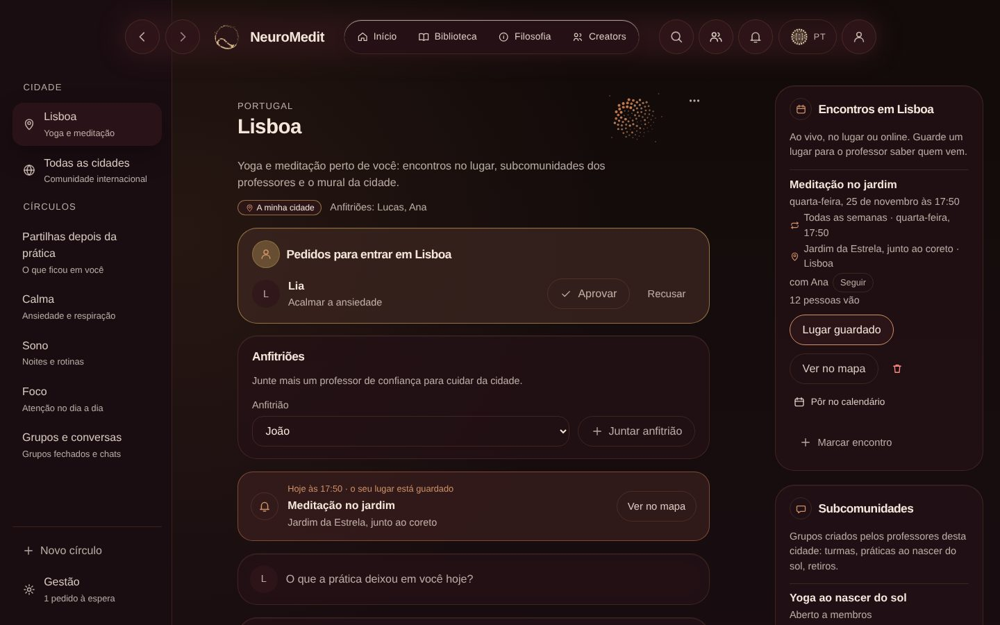
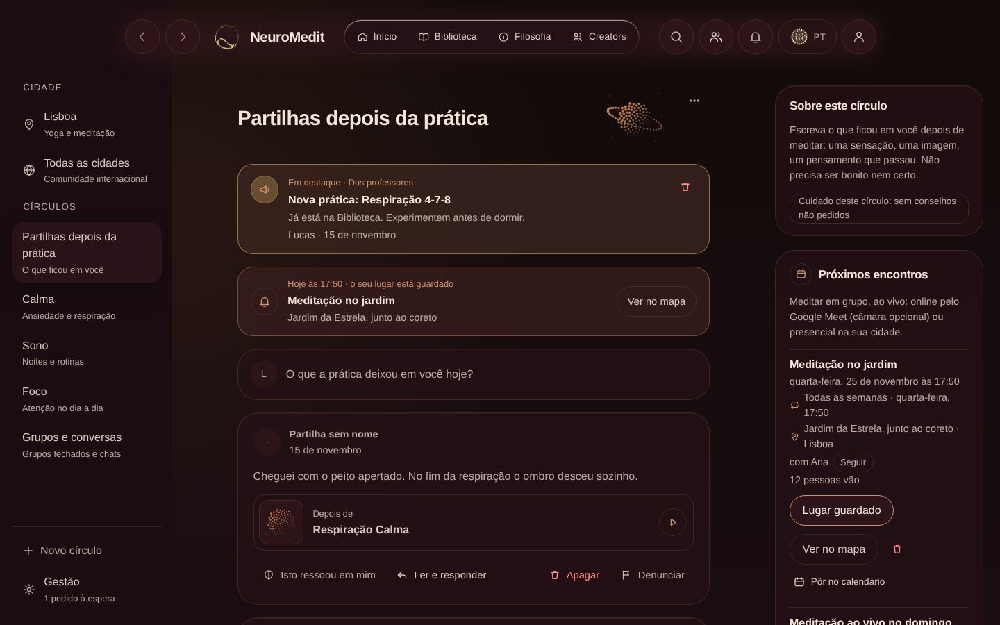
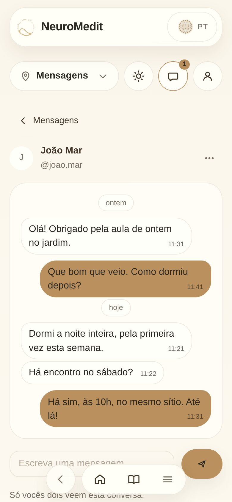
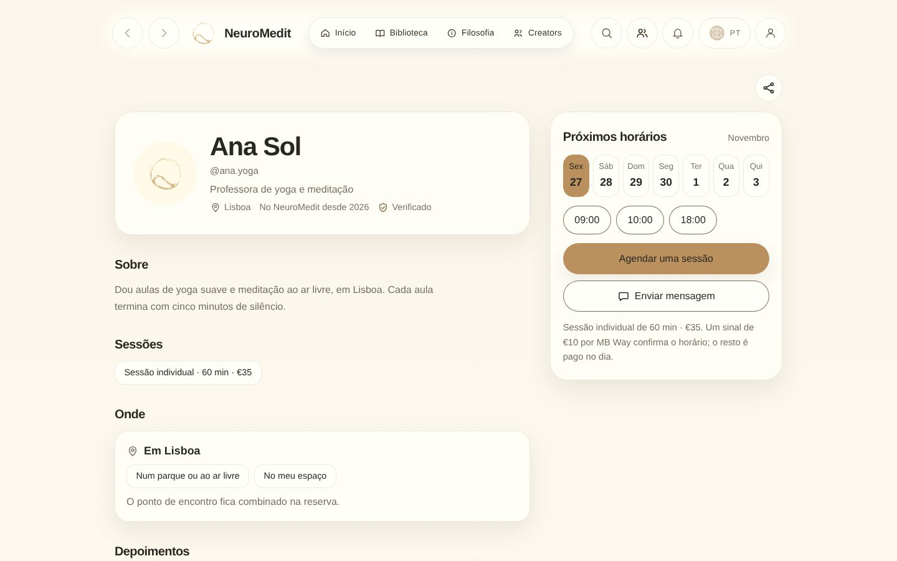

Grupos do Facebook
Um destaque fixo e regras à vista
O aviso mais recente dos professores fica no topo, e cada círculo mostra o seu propósito e o seu cuidado, como “sem conselhos não pedidos”.
NeuroMedit · no ar · novembro de 2026
Praticar junto, perto de casa ou do outro lado do mundo, sem a ansiedade das redes.
A comunidade do NeuroMedit tem três camadas: círculos online por intenção, para o mundo inteiro; cidades com encontros ao vivo; e as subcomunidades que os professores criam em cada cidade.
Nota de método. Acabou de abrir, por isso ainda não há dados de uso. As imagens usam dados de teste, com nomes inventados. As decisões vêm de pesquisa sobre comunidades e de princípios de design; eu defini cada uma, e a IA (Claude) escreveu o código e as regras de segurança sob a minha direção.

O problema
Quem medita sozinho desiste com facilidade; praticar com outras pessoas ajuda a voltar. Mas as redes sociais trazem o contrário do que a meditação procura: comparação, números e pressa.
E havia um pedido concreto: pessoas em Lisboa, no Porto e no Brasil queriam encontrar-se ao vivo, não só ouvir uma voz no telemóvel.
Juntar pessoas sem trazer a ansiedade das redes.
Pesquisa
Estudei os grupos do Facebook e comunidades de yoga e meditação: as sanghas do Plum Village, o Insight Timer, o Meetup e os estúdios. Para a cor, segui os artigos da Nielsen Norman Group: cor para orientar, não para enfeitar.
Grupos do Facebook
O aviso mais recente dos professores fica no topo, e cada círculo mostra o seu propósito e o seu cuidado, como “sem conselhos não pedidos”.
Sanghas
Encontros fixos semanais. O site mostra sempre a próxima data e põe no calendário com a repetição.
Estúdios
Ao aprovar alguém, o anfitrião manda uma mensagem curta de boas-vindas. Uma pessoa que fala contigo muda isso.
Meetup
Cada encontro diz “12 pessoas vão”: quantas, nunca quem.
Decisões de design
01
A comunidade é fechada. Cada pedido é lido por uma pessoa antes de entrar: o anfitrião da cidade ou eu.
02
Quem quiser partilha sem nome. O nome fica escondido dos membros; só a moderação o consegue ler.
03
“Isto ressoou em mim” só quem tocou o vê. Pode-se seguir professores, mas o número de seguidores só o professor o vê.
04
As outras ficam “em breve”, com “Quero o NeuroMedit aqui”. Os pedidos dizem-me onde abrir a seguir, e quem quiser pode pedir para ser anfitrião.
05
Não há localização automática. A pessoa diz onde pratica, e muda quando quiser.
06
Sem plano pago, não há e-mails automáticos. O lembrete aparece no topo do mural nas 24 horas antes, e cada encontro tem “Pôr no calendário”.


Quem ainda não entrou
Quem chega sem conta é recebido por um planeta: gira o globo, toca no seu país e escolhe a cidade, antes de qualquer pedido de login. As cidades que brilham já têm comunidade aberta. Por baixo, uma prévia dos círculos e o porquê de a comunidade ser fechada.


Experimente
É o mesmo código que corre na porta da comunidade, aqui com as cores do meu portfólio. Arraste para girar, use os botões para aproximar e toque num dos países que já têm cidades.
Os 36 aeroportos espanhóis da Vueling, segundo a lista de vueling.com (novembro de 2026). Toque num para ver a região e o nome do aeroporto. Barcelona brilha: é a base principal. Um estudo pessoal, para o meu trabalho no apoio ao cliente.
Toque num país, no planeta ou aqui em cima.
Segurança
Tudo corre no plano gratuito do Firebase, sem servidor próprio, por isso a segurança está nas regras do Firestore e não só no ecrã:
Depois da abertura
Nos dias seguintes à abertura, usei a comunidade como membro, como professor e como visitante, no celular e no computador. Cada momento em que hesitei virou uma mudança:
05
Vi
Decidi: uma só, a profissional, que é também o perfil da comunidade, editada num só lugar.
06
Vi
Decidi: a mesma navegação em todas as páginas, com início, configurações e voltar a um toque, e a barra com o mesmo tamanho em todas.
07
Vi
Decidi: uma linha só: onde estou, calma, mensagens e perfil. O resto abre quando se pede, porque mais opções pedem mais tempo para decidir.
08
Vi
Decidi: bolhas como as do WhatsApp: as minhas à direita, na cor de destaque, as da outra pessoa à esquerda, com a hora dentro.


Diário de direção
Eu defini o que fazer, testei cada versão no celular e no computador e devolvi o que não estava certo. Alguns momentos em que a direção mudou o produto:
01
Vi
Decidi: um só, no avatar do topo, e a lateral colada à esquerda, com destinos em cima e gestão no fundo.
02
Vi
Decidi: rever a página inteira fora da conta, centrar os ícones e mostrar as cidades na prévia.
03
Vi
Decidi: dourado só no que vem deles, segundo a regra de usar a cor para orientar.
04
Vi
Decidi: deixar seguir, mas mostrar o número só ao próprio professor.